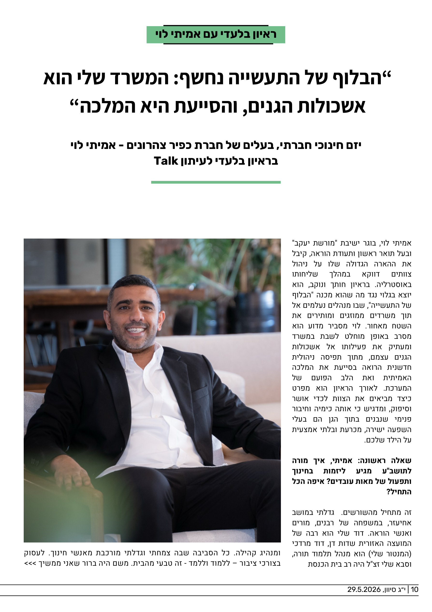
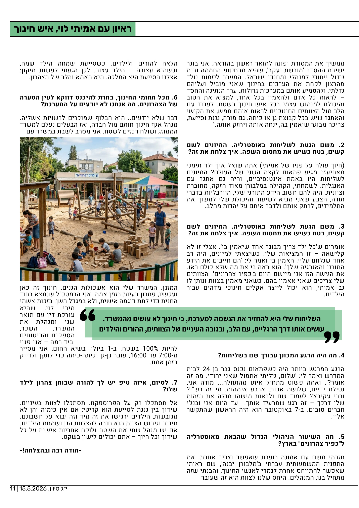

אמיתי לוי, יזם חינוכי חברתי, בעלים של חברת כפיר צהרונים, בוגר ישיבת "מורשת יעקב" ובעל תואר ראשון ותעודת הוראה, בראיון בלעדי לעיתון Talk.
אמיתי, איך מורה לתושב"ע מגיע ליזמות בחינוך ותפעול של מאות עובדים? איפה הכל התחיל?
זה מתחיל מהשורשים. גדלתי במושב אחיעזר, במשפחה של רבנים, מורים ואנשי הוראה. דוד שלי הוא רבה של המועצה האזורית שדות דן, דוד מרדכי (המנטור שלי) הוא מנהל תלמוד תורה, וסבא שלי זצ"ל היה רב בית הכנסת ומנהיג קהילה. כל הסביבה שבה צמחתי וגדלתי מורכבת מאנשי חינוך. לעסוק בצורכי ציבור – ללמוד וללמד - זה טבעי מהבית. משם היה ברור שאני ממשיך את המסורת ופונה לתואר ראשון בהוראה. אני בוגר ישיבת ההסדר 'מורשת יעקב', שהיא מבחינתי החממה ובית גידול ייחודי למנהלי ומחנכי ישראל. המעבר ליזמות נולד מהרצון לקחת את הערכים בחינוך שאני מוביל ועליהם גדלתי, ולהטמיע אותם במערכות גדולות. ערך הנתינה והחסד – לראות כל אדם ולהאמין בכל אחד, למצוא את הטוב והיכולת למימוש עצמי בכל איש חינוך בשטח. לעבוד עם הלב מול הצוותים החינוכיים לראות אותם ממש, את הקושי והאתגר שיש בכל קבוצת גן או כיתה. גם מורה, גננת וסייעת, צריכה מבוגר שיאמין בה, ינחה אותה ויחזק אותה.
משם הגעת לשליחות באוסטרליה. המיונים לשם קשים, בטח כשיש את מחסום השפה. איך צלחת את זה?
אתה שואל איך ילד תימני מאחיעזר מגיע פתאום לקצה השני של העולם? המיונים לשליחות היו באמת אינטנסיביים, והיה גם אתגר עם האנגלית. לשמחתי, הקהילה במלבורן מאוד חזקה, מחוברת וציונית. היה להם חשוב הידע התורני שלי, הוורבליות בדברי תורה, הצבע שאני מביא לשיעור והיכולת שלי למשוך את התלמידים, לרתק אותם ולדבר איתם על יהדות מהלב.
היה מישהו שהאמין בך כשלא כולם ראו?
אומרים ש'כל ילד צריך מבוגר אחד שיאמין בו'. אצלי זו לא קלישאה – זו המציאות שלי. כשיצאתי למיונים, היה רב אחד שנלחם עליי, האמין בי ואמר לי: 'הם חייבים את הידע התורני והאנרגיה שלך'. הוא ראה בי את מה שלא כולם ראו. את הגישה הזו אני מיישם היום ב'כפיר צהרונים'. הצוותים שלי צריכים שאני אאמין בהם. כשאני מאמין בצוות ונותן לו גב אמיתי, הוא יכול לייצר אקלים חינוכי מדהים עבור הילדים.
כשפתאום נכנס גבר בן 24 לבית המדרש ואמר לי: "שלום, גיליתי אתמול שאני יהודי. מה זה אומר?" — ואתה פשוט מתחיל איתו מהתחלה.
מה היה הרגע המכונן עבורך שם בשליחות?
הרגע המרגש ביותר היה כשפתאום נכנס גבר בן 24 לבית המדרש ואמר לי: 'שלום, גיליתי אתמול שאני יהודי. מה זה אומר?' ואתה פשוט מתחיל איתו מהתחלה... מודה אני, נטילת ידיים, שלושה אבות, ארבע אימהות. מי זה רש"י? ורבי עקיבא? לעמוד שם ולראות מישהו מגלה את הזהות שלו דרכך – זה רגע שמרעיד אותך. עד היום אני ובנג'י חברים טובים. ב-7 באוקטובר הוא היה הראשון שהתקשר אליי.
מה השיעור הניהולי הגדול שהבאת מאוסטרליה ל"כפיר צהרונים" בארץ?
חזרתי משם עם אמונה בוערת שאפשר וצריך אחרת. את התפנית המשמעותית עברתי ב'מלבורן יבנה', שם ראיתי שאפשר להתייחס אחרת לגמרי לאנשי החינוך, והבנתי שזה מתחיל בנו, המנהלים. היחס שלנו לצוות הוא זה שעובר הלאה להורים ולילדים. כשסייעת שמחה הילד שמח, וכשהיא עצובה – הילד עצוב. לכן הגעתי לעשות תיקון: אצלנו הסייעת היא המלכה. היא האמא והלב של הצהרון.
מכל תחומי החינוך, בחרת להיכנס דווקא לעין הסערה של הצהרונים. מה אנחנו לא יודעים על המערכת?
דבר שלא יודעים.. הוא הבלוף שמוכרים לרשויות אשליה. מנהל אגף חינוך חותם מול חברה, ואז הבעלים נעלם למשרד הממוזג ושולח רכזים לשטח. אני מסרב לשבת במשרד עם המזגן. המשרד שלי הוא אשכולות הגנים. חינוך זה כאן ועכשיו, פתרון בעיות בזמן אמת. אני הרמטכ"ל שנמצא בחוד החנית כדי לתת דוגמה אישית, ולא במגדל השן. בזכות אשתי מירי לוי, עורכת דין עם תואר שני שמנהלת את המשרד, השכר, הספקים והביטוחים ביד רמה – אני פנוי להיות 100% בשטח. ב-1 ביולי, בשיא החום, אני מסייר מ-7:00 עד 16:00, עובר גן-גן וכיתה-כיתה כדי לתקן ולדייק בזמן אמת.
לסיום, איזה טיפ יש לך להורה שבוחן צהרון לילד שלו?
אל תסתכלו רק על הפרוספקט. תסתכלו לצוות בעיניים. שידוך בין גננת לסייעת הוא קריטי; אם אין כימיה והן לא מגובשות, הילדים ירגישו את זה מיד וזה יבוא על חשבונם. חיבור וגיבוש הצוות הוא חובה להצלחת הגן ושמחת הילדים. אם יש מנהל שחי את השטח ולוקח אחריות אישית על כל שידוך וכל חיוך – אתם יכולים לישון בשקט.
סיוון תשפ״ו | גיליון מיוחד


השליחות שלי היא להחזיר את הנשמה למערכת, כי חינוך לא עושים מהמשרד. עושים אותו דרך הרגליים, עם הלב, ובגובה העיניים של הצוותים, ההורים והילדים.